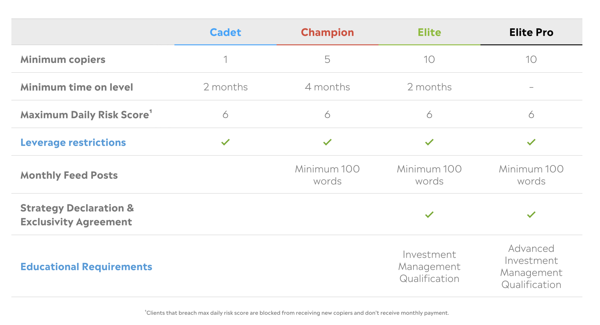
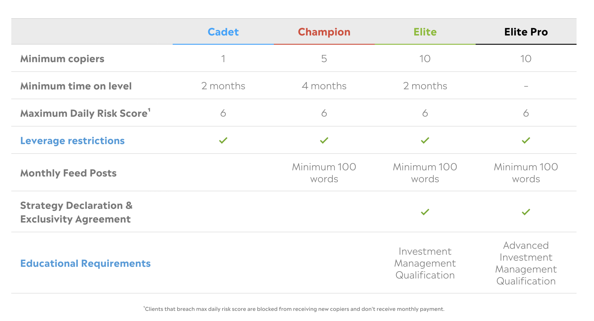
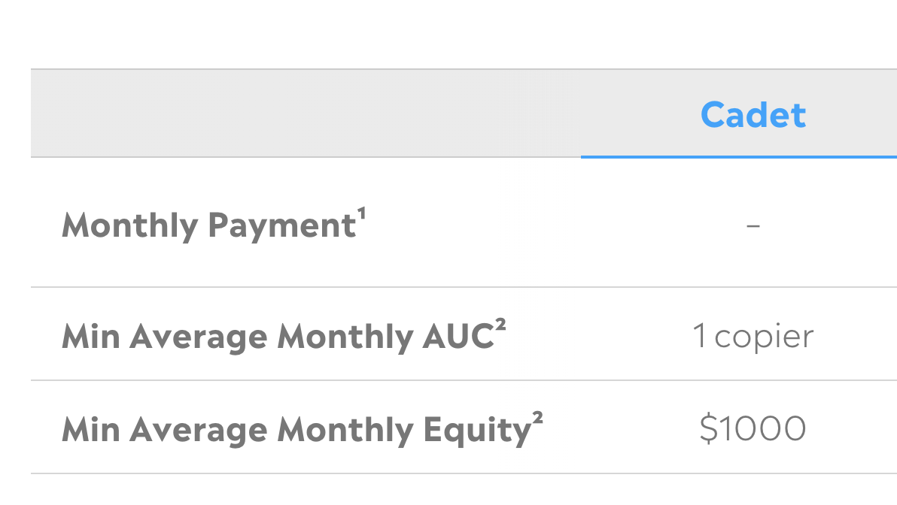
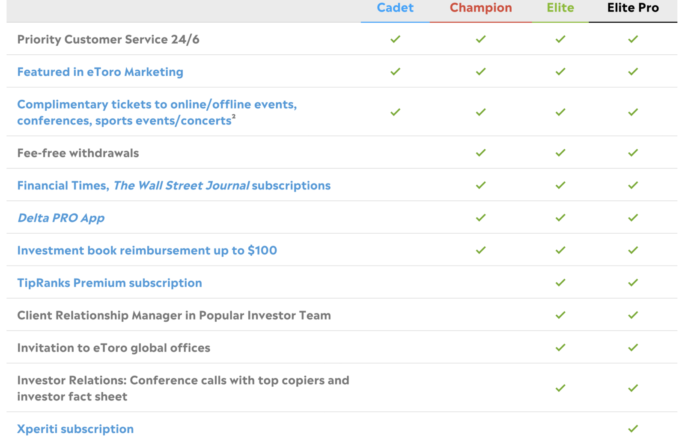
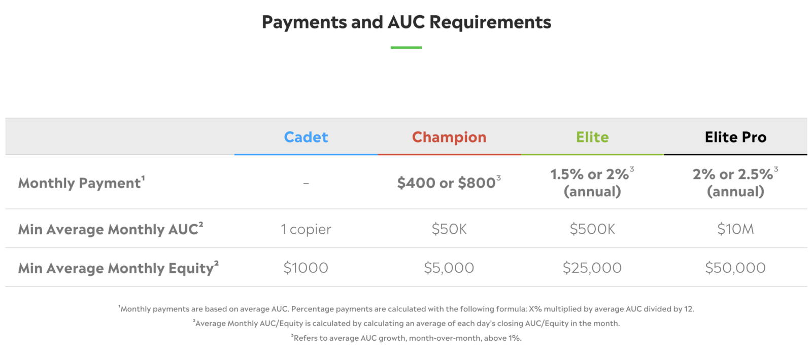
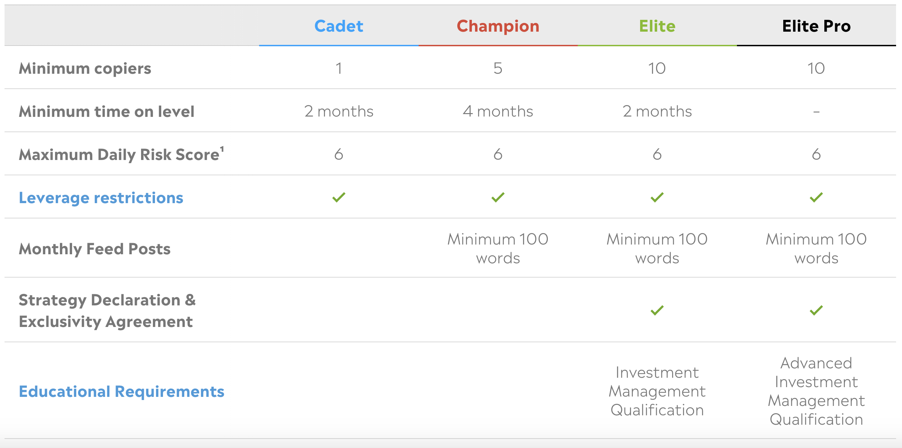
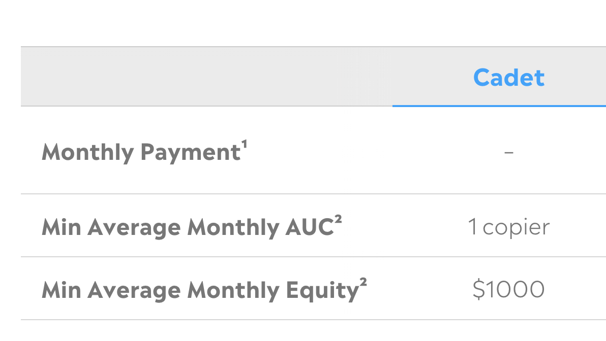
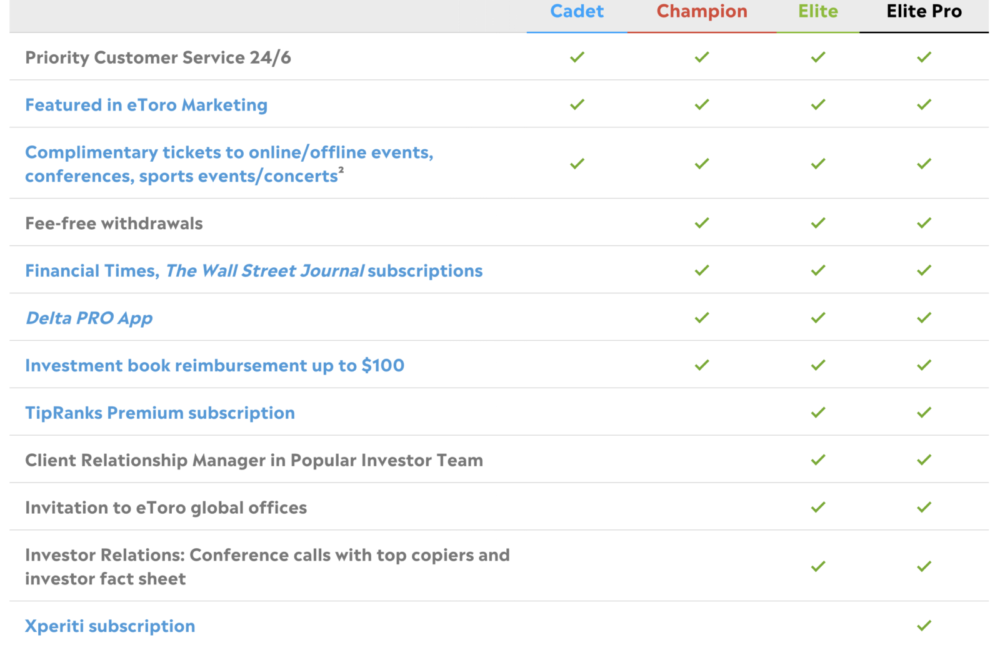
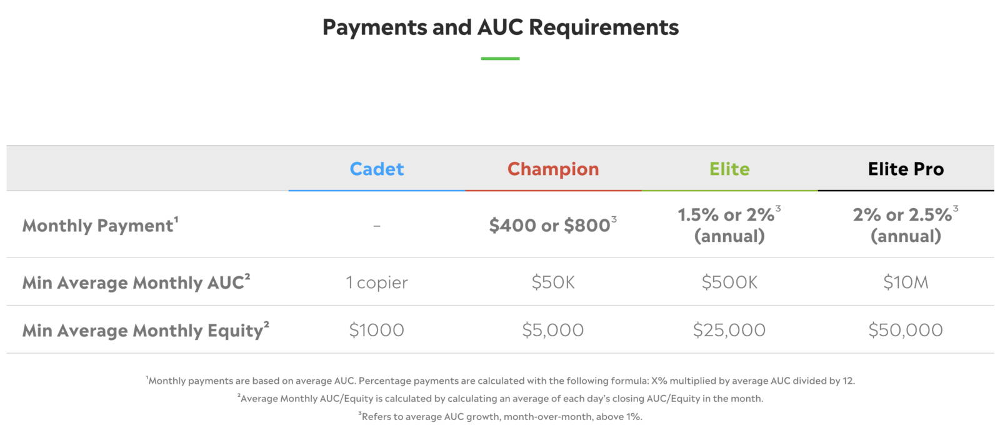
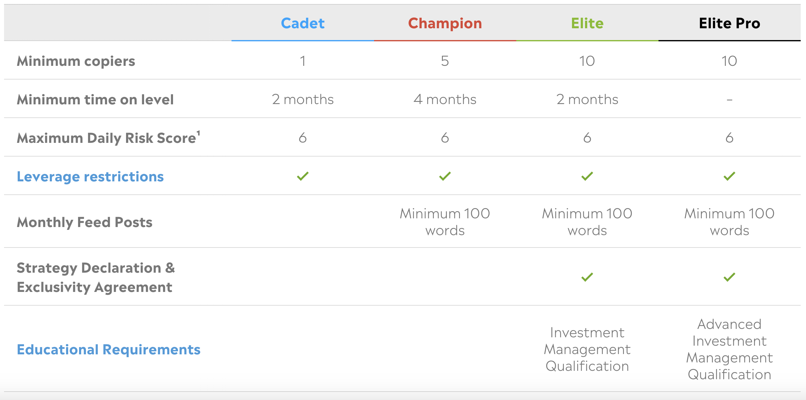

The people we copy on eToro are called "Popular Investors". They're the experienced investors whose trades we automatically copy through eToro's copy trading feature. But what's in it for them — and could you become one?
What is an eToro Popular Investor?
An eToro Popular Investor is one of the people whose trades you can copy on the platform. One of eToro's main selling points is its copy trading feature — it allows you to automatically copy all the trades of more experienced investors. Popular Investors are the people making that possible.
How Do Popular Investors Get Paid?
They make money directly from eToro — the customers don't pay them, eToro does. The more people are copying you, and the more money they're copying you with, the more you can earn. It's a performance-based incentive system.
Do You Need to Be a Professional?
Nope. You don't need to be a professionally trained investor or have any financial qualifications — no certificates or degrees are needed. Just a consistent track record. Users on eToro will be checking your statistics page — if they like what they see, they'll copy you. It's that simple.
The 4 Levels (Tiers) of Popular Investor
eToro has made 4 different levels or 'tiers'. As you get more copiers and have more money copying you, you can rise through these tiers. As you rise through the levels, the benefits and payments get better. The requirements are different at each level — you'll need more people copying you, and more total money being used to copy you overall. You'll also need to adhere to eToro's 'Responsible Trading Guidelines' at every level.
Level 1 — 'Cadet' (Blue Star)
The first level is 'Cadet'. This is where everyone starts. Requirements include:
- Your 'Risk Score' can never go above 6 out of 10
- You must adhere to eToro's Responsible Trading policy and leverage restrictions
- You need at least one 'Verified' copier (the person copying you must have fully verified their eToro account — and cannot be a family member)
- You need at least $1,000 of Assets Under Custody (AUC) — the total amount being used to copy your trades
- You must stay at Cadet level for at least 2 months before progressing
At Cadet level there are no monthly payments, but it's the all-important first step on the ladder.
Level 2 — 'Champion' (Red Star)
At Champion level you'll receive monthly payments directly from eToro, fee-free withdrawals, and your red star badge becomes visible on your profile. You'll need to stay at this level for at least 4 months before you can progress further.
Level 3 — 'Elite' (Green Star)
At Elite level, the monthly payment becomes a percentage payout based on your total AUC. You'll also need to stay at Elite for at least 2 months before progressing to the top tier.
Level 4 — 'Elite Pro' (Black Star)
The black star means you've reached the highest level of Popular Investor on eToro. This is where things can get potentially very lucrative.
Share of Assets Under Custody
At Elite and Elite Pro level, you receive between 1.5% and 2.5% of your annual AUC, paid monthly. To illustrate:
- $5,000,000 AUC × 2% = $100,000 per year
- Divided by 12 months = approximately $8,333 per month
Some Popular Investors have considerably more than $5 million AUC — it can get extremely lucrative. But getting there requires genuine, consistent performance over a long time.
eToro Editor's Choice
At the top of the 'Copy People' page, eToro regularly highlights various investors they believe the community might be interested in. Getting featured in this section often rockets a Popular Investor into the spotlight — copier numbers can increase exponentially for a while. Keeping those new copiers, though, is entirely down to ongoing performance.
How Hard is it to Reach Elite Pro?
It's not easy. Your statistics need to be attractive in terms of both risk and profitability. If you're doing well consistently, people will find you. It seems to gain momentum — the more copiers you have, the more visible you become, and visibility brings more copiers. Your performance is everything.
 

 






